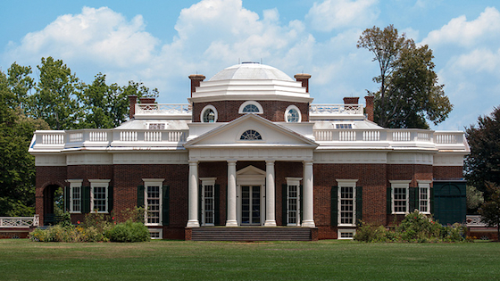
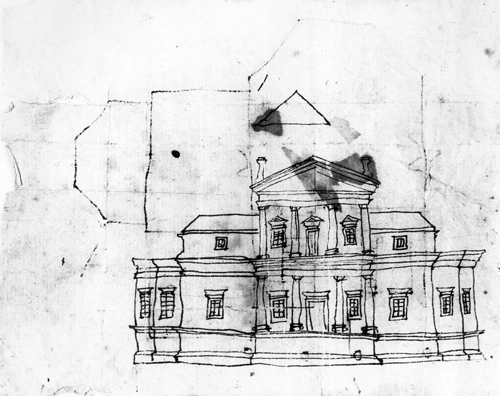

Monticello
Monticello was home to Jefferson throughout his life and is where he spent the last 17 years of his life until death. The estate was originally a considerable amount of land inherited from his father before he decided to build Monticello. Throughout his life he was constantly expanding and changing the house. There are a total of forty three rooms in the entire home, thirty three in the house itself. The first original design of Monticello only had 14 rooms total. Jefferson inherited slaves from both his father and father-in-law in a typical year he owned about 200. About 80 of these slaves lived at Monticello, the others lived on his other estates in Virginia. Because Jefferson died more than $107,000 in debt, his daughter and his financial manager found it necessary to sell nearly all of the contents of Monticello and then sell the plantation itself. In 1834 Uriah P. Levy, a naval officer who admired Jefferson’s views purchased the house. In 1923 Jefferson Levy a heir of Uriah sold Monticello to the newly created Thomas Jefferson Foundation which owns Monticello today. Click the images of Monticello to englarge and check out more pictures of the estate in the Gallery.
{kind=link}
{kind=link}